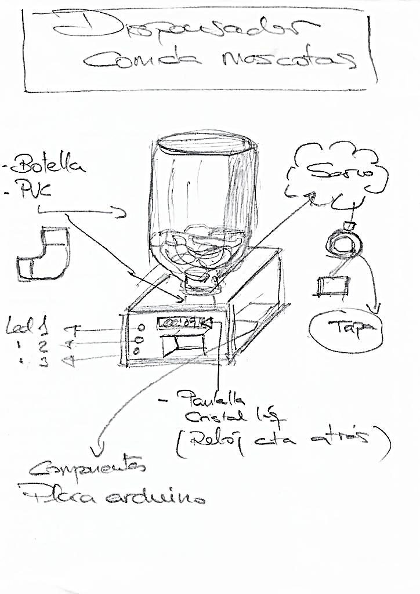

¿Para qué sirve?
Un dispensador de comida para mascotas sirve para alimentar a perros y gatos de manera autónoma, entregando comida en horarios y cantidades determinadas. Es útil para mantener una alimentación organizada y evitar que las mascotas pasen mucho tiempo sin comer cuando su dueño no está en casa.
También ayuda a controlar las proporciones y mantener una rutina diaria de alimentación, facilitando el cuidado de la mascota.
1. ¿Qué queremos construir?
- Queremos construir un dispensador automático de comida para mascotas.
- El dispositivo debe entregar alimento en horarios establecidos.
- También debe permitir controlar la cantidad de comida.
¿Por qué escogimos esta idea?
Escogimos esta idea porque muchas personas pasan varias horas fuera de casa y no siempre pueden alimentar a sus mascotas a tiempo. Con este proyecto buscamos crear una solución sencilla, útil y económica.
¿Qué problema queremos solucionar?
Queremos solucionar el problema de olvidar o retrasar la alimentación de las mascotas. El dispensador permitirá que reciban su comida de forma organizada, incluso cuando sus dueños no estén presentes.
2. ¿Qué investigamos?
¿Qué necesitamos aprender?
- Cómo funciona un dispensador automático.
- Cómo programar los horarios de alimentación.
- Cómo utilizar un motor para mover la comida.
- Cómo conectar los componentes electrónicos.
- Cómo construir una estructura resistente y segura.
¿Qué información encontramos?
Encontramos que un dispensador automático puede utilizar un recipiente para almacenar la comida, un motor para liberar una porción y un sistema de control que activa el mecanismo en determinados horarios.
Fuentes consultadas
- Videos educativos sobre dispensadores automáticos.
- Páginas web sobre proyectos con Arduino.
- Información sobre motores y sensores.
- Apuntes de clase y explicaciones del profesor.
3. Nuestro diseño
Boceto inicial
Imaginamos un dispensador con un recipiente en la parte superior para guardar la comida. En la parte inferior estaría el mecanismo encargado de dejar salir el alimento hacia el plato de la mascota.
¿Cómo imaginamos el robot?
Lo imaginamos como una caja sencilla, estable y fácil de usar. Tendría un espacio para almacenar comida y un sistema automático que funcionaría por medio de un motor.
¿Qué queremos que haga?
Queremos que el dispensador entregue comida automáticamente en los horarios programados y que proporcione una cantidad adecuada para la mascota.

4. Materiales
Materiales necesarios
- Cartón, madera o material para construir la estructura.
- Recipiente para almacenar la comida.
- Plato para recibir el alimento.
- Cables de conexión.
- Fuente de energía o batería.
Componentes
- Arduino o tarjeta de control.
- Motor servo o motorreductor.
- Sensor o módulo de tiempo.
- Interruptor.
- Protoboard.
¿Para qué utilizaremos cada uno?
La estructura servirá para sostener el dispensador. El recipiente almacenará la comida. El motor abrirá o moverá la compuerta para liberar el alimento. La tarjeta de control permitirá programar el funcionamiento del dispositivo. Los cables conectarán todos los componentes y la batería proporcionará energía.
5. Construcción
¿Cómo comenzamos?
Primero realizamos el diseño de la estructura y medimos el espacio necesario para guardar la comida. Después seleccionamos los materiales y organizamos los componentes electrónicos.
Pasos realizados
- Diseñamos la estructura del dispensador.
- Construimos el recipiente para almacenar la comida.
- Instalamos el motor y la compuerta.
- Conectamos los cables y la tarjeta de control.
- Programamos los horarios de alimentación.
- Unimos todas las partes del prototipo.
Fotografías del proceso
En esta parte se pueden agregar fotografías de la construcción, la conexión de los componentes y las pruebas del dispensador.
6. Pruebas y cambios
¿Qué probamos?
Probamos que el motor funcionara correctamente, que la compuerta pudiera liberar la comida y que la estructura soportara el peso del recipiente.
¿Qué funcionó?
Funcionó el mecanismo de salida de comida y la estructura logró mantenerse estable durante las pruebas.
¿Qué problemas encontramos?
- La comida se atascaba algunas veces.
- El motor necesitaba una mejor sujeción.
- La cantidad de comida no siempre era igual.
¿Qué cambiamos?
Cambiamos el tamaño de la gitabertura, reforzamos la estructura y ajustamos el movimiento del motor para que la comida saliera con mayor facilidad.
7. Resultado
Como resultado, construimos un prototipo de dispensador automático capaz de almacenar comida y liberarla mediante un mecanismo controlado.
El proyecto nos permitió aprender sobre programación, electricidad, diseño y construcción. Aunque todavía puede mejorar, cumple con la función principal de ayudar a alimentar una mascota de manera automática.
Conclusión
El dispensador automático es una solución práctica para mantener una rutina de alimentación. En el futuro se podrían agregar una pantalla, una cámara, una conexión al celular o un sensor que indique cuándo se está acabando la comida.